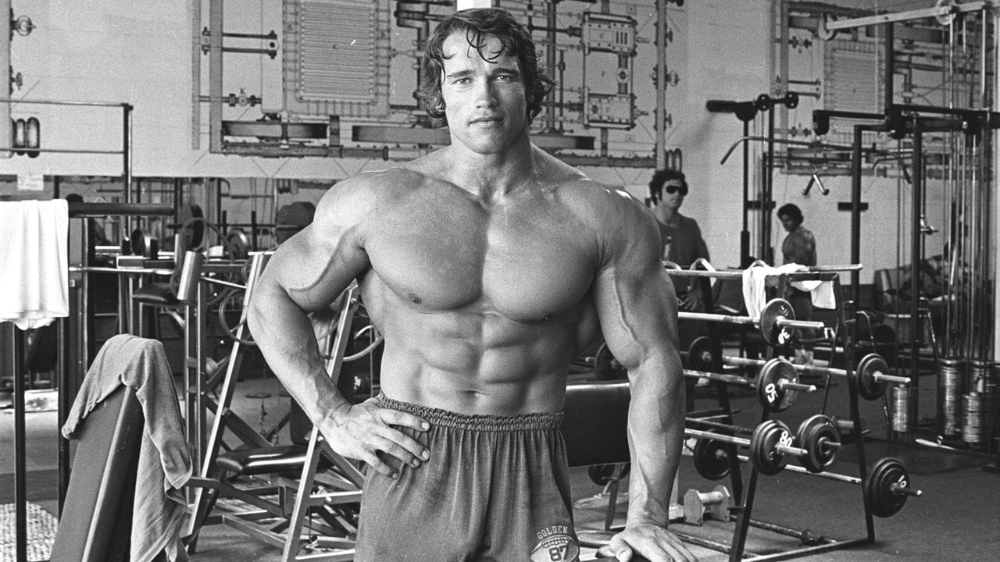

výběr plánu
Jaký je tvůj cíl?
Každý cíl potřebuje trochu jiný plán. Hubnutí potřebuje více pohybu a kontrolu jídla, síla potřebuje postupné přidávání zátěže a kondice pravidelné kardio.

Vyber plán
cíl 1
Plán na hubnutí
Tento plán kombinuje silové cvičení, kardio a volné dny. U hubnutí je důležité propojit trénink s jídelníčkem a nepřehánět hladovění.
| Den | Trénink | Délka | Poznámka |
|---|---|---|---|
| Pondělí | Celé tělo | 45 min | dřepy, kliky, plank |
| Úterý | Rychlá chůze | 40 min | lehké kardio |
| Středa | Volno | - | regenerace |
| Čtvrtek | Kruhový trénink | 35 min | vyšší tep |
| Pátek | Kardio | 30 min | běh nebo kolo |
cíl 2
Plán na sílu
Tento plán je vhodný pro člověka, který chce zesílit. Základem jsou silové cviky, dostatek odpočinku a postupné zvyšování zátěže.
| Den | Trénink | Délka | Poznámka |
|---|---|---|---|
| Pondělí | Horní část těla | 60 min | tlaky, přítahy |
| Úterý | Dolní část těla | 60 min | dřepy, výpady |
| Středa | Volno | - | spánek a jídlo |
| Čtvrtek | Celé tělo | 60 min | základní cviky |
| Pátek | Lehké kardio | 20 min | nepřehánět |
cíl 3
Plán na kondici
Tento plán je pro člověka, který chce vydržet více, méně se zadýchávat a zlepšit celkovou fyzičku.
| Den | Trénink | Délka | Poznámka |
|---|---|---|---|
| Pondělí | Běh nebo rychlá chůze | 30 min | střední tempo |
| Úterý | Cvičení doma | 35 min | vlastní váha |
| Středa | Volno | - | protažení |
| Čtvrtek | Intervaly | 25 min | rychlejší úseky |
| Sobota | Sport podle výběru | 60 min | fotbal, kolo, plavání |